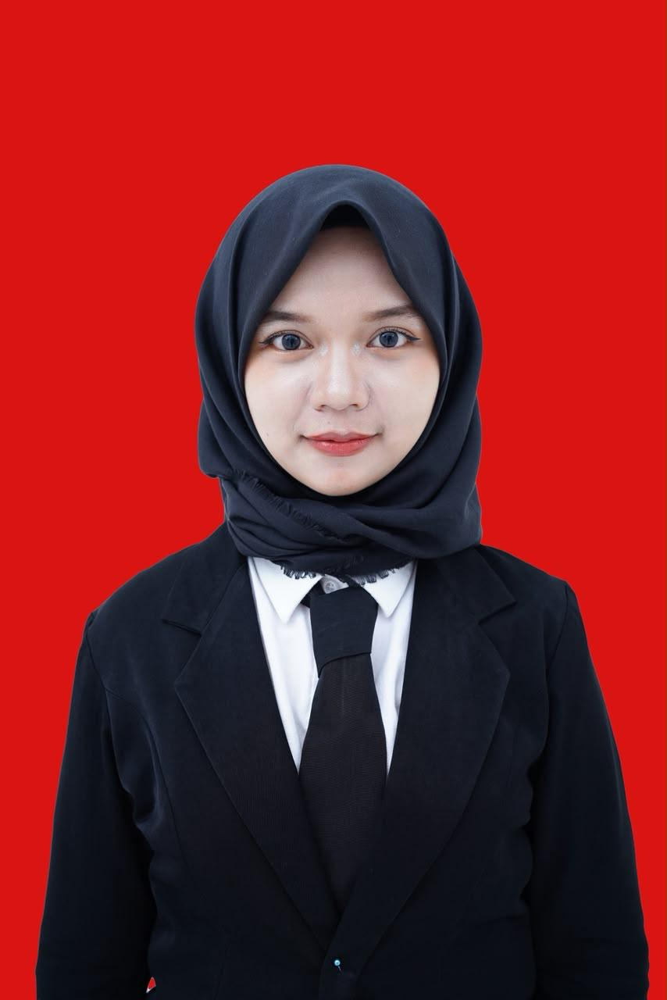
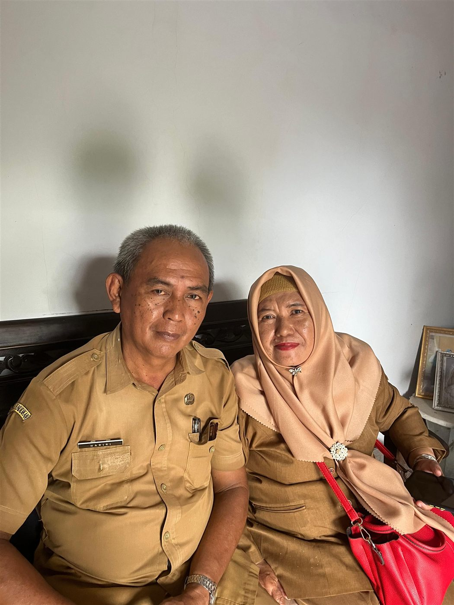

Pendidikan
Riwayat Pendidikan
S1 Bimbingan dan Konseling, IKIP Siliwangi, angkatan 2021. Dilanjutkan ke PPG Prajabatan Bimbingan dan Konseling di kampus yang sama.

Beranda / Profil
Calon Guru Bimbingan dan Konseling
Saya mahasiswa PPG Prajabatan Bimbingan dan Konseling di IKIP Siliwangi. Praktik lapangan saya jalani di SMA Negeri 1 Cisarua, mulai dari PPL Terbimbing pada semester I sampai PPL Mandiri pada semester II.
Arah dan komitmen
Dua visi yang saling menopang, lalu lima misi yang saya pegang untuk mewujudkannya. Kelimanya lahir dari refleksi PPG serta karya inovasi saya.
Pendidikan Indonesia yang menuntun setiap murid tumbuh sesuai kodratnya: sekolah menjadi tempat yang aman, menghargai perbedaan latar belakang, dan memperhatikan kesejahteraan murid sama seriusnya dengan nilai akademiknya, sehingga lulusannya mandiri, berkarakter, dan siap memilih jalan hidupnya sendiri.
Menjadi Guru Bimbingan dan Konseling yang berkembang bersama murid, karena guru juga pembelajar sepanjang hayat: terus belajar dari setiap layanan, setiap data, dan setiap percakapan dengan murid, supaya pendampingan saya tumbuh seiring kebutuhan mereka.
Setiap layanan saya mulai dari AKPD, observasi, dan pertanyaan tentang kebutuhan di balik perilaku murid, sebelum menegur atau menilai. Data inilah yang menentukan isi layanan berikutnya.
Berangkat dari: Asesmen dan Layanan BK, Intervensi Guru
Layanan yang disusun dari data itu saya jalankan di ruang yang aman: tidak ada jawaban yang dinilai benar atau salah, murid boleh melewati pertanyaan, dan jawaban dicatat tanpa nama.
Berangkat dari: Konseling Individu, Konseling Kelompok
Di ruang yang aman, murid diajak berbicara, bukan hanya mendengarkan: apersepsi yang dekat dengan keseharian, pembagian peran, dan media permainan seperti Ular Tangga Motivasi.
Berangkat dari: PPL Mandiri, Karya Inovasi
Setiap layanan saya nilai lewat evaluasi proses, evaluasi hasil, dan umpan balik murid. Hasilnya kembali menjadi data untuk komitmen pertama, sehingga layanan terus diperbaiki.
Berangkat dari: Design Thinking, PPL
Semua itu saya jalankan bersama Guru BK, wali kelas, guru, dan orang tua, dan saya latih lebih dahulu pada diri sendiri, karena kemampuan saya juga dapat tumbuh.
Berangkat dari: Projek Kepemimpinan, Pola Pikir Bertumbuh
Karena murid yang paling jarang diperhatikan sering kali yang paling membutuhkan seseorang untuk mendengarkan. Saya ingin menemani mereka mengenali diri sendiri dan tumbuh sesuai kodratnya, berangkat dari data dan empati, bukan dari asumsi saya tentang mereka.
"Perilaku yang terlihat bukanlah masalahnya. Sebelum menegur, sebelum merancang layanan, sebelum menilai - cari dulu kebutuhan yang ada di baliknya."

Kedua orang tua saya berprofesi sebagai pendidik. Dari rumah saya melihat sendiri bahwa mendidik bukan hanya mengajar, tetapi juga menemani dan memahami anak didik. Karena itulah saya termotivasi untuk mengikuti jejak mereka dan memilih menjadi guru, khususnya Guru BK.
Perjalanan saya di PPG Prajabatan, masing-masing dengan halamannya sendiri di portofolio ini.
PPG Semester I
Filosofi Pendidikan, Asesmen dan Layanan BK, PPL Terbimbing di SMA Negeri 1 Cisarua, Pola Pikir Bertumbuh, Design Thinking, dan Praktikum Konseling Individu.
Buka Semester IPPG Semester II
Intervensi Guru dalam Penelitian Universal, Pembelajaran Sosial Emosional, PPL Mandiri, Praktikum Konseling Kelompok, dan Projek Kepemimpinan.
Buka Semester IIMulai 27 Juli 2026
Orientasi sekolah, layanan bimbingan klasikal per siklus, dan kegiatan nonmengajar bersama Guru BK.
Buka PPL MandiriPendidikan, pengalaman, keterampilan, dan cara menghubungi saya.
Pendidikan
S1 Bimbingan dan Konseling, IKIP Siliwangi, angkatan 2021. Dilanjutkan ke PPG Prajabatan Bimbingan dan Konseling di kampus yang sama.
Pengalaman
Pernah mengajar di SD Negeri 1 Girinata. Pengalaman itu menjadi perkenalan pertama saya dengan ruang kelas sebelum masuk ke layanan bimbingan dan konseling di jenjang SMA.
Keterampilan
Komunikasi yang baik, baik di depan kelas maupun dalam percakapan empat mata. Selain itu: mengolah asesmen kebutuhan murid seperti AKPD dan sosiometri, menyusun RPL beserta instrumen evaluasinya, serta merancang media layanan berbentuk PPT, LKPD, dan permainan digital.
Kontak
Cara paling cepat menghubungi saya adalah lewat Instagram. Tautan CV akan ditambahkan di sini bila nanti saya terbitkan.
Instagram @fahirafw